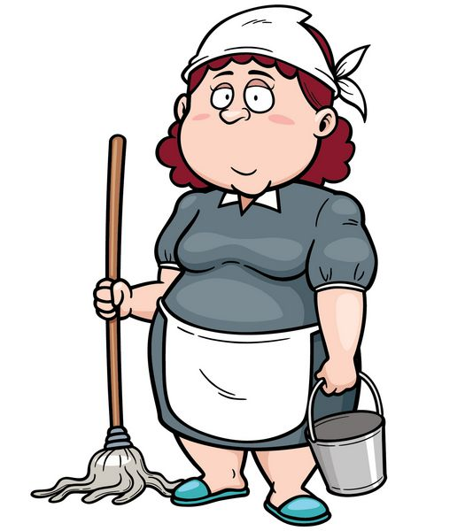
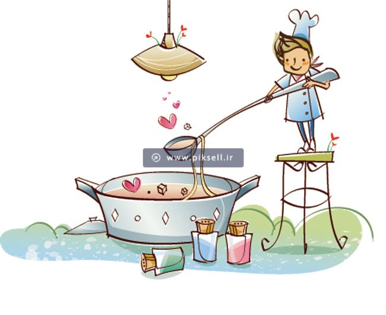
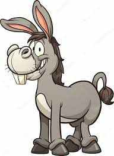
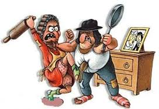
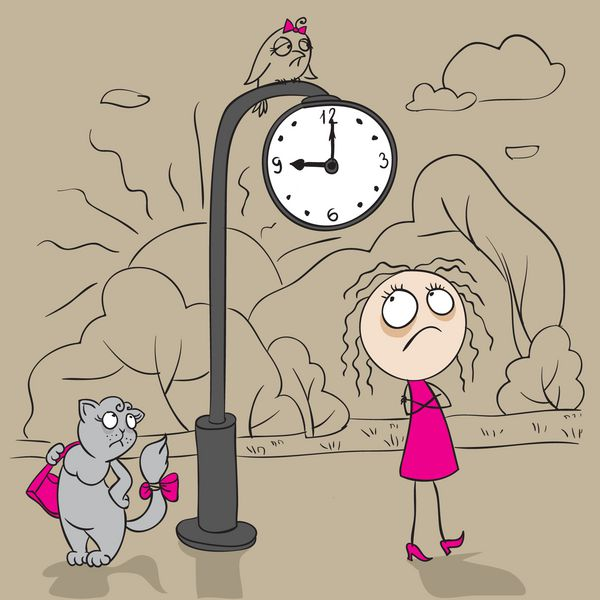
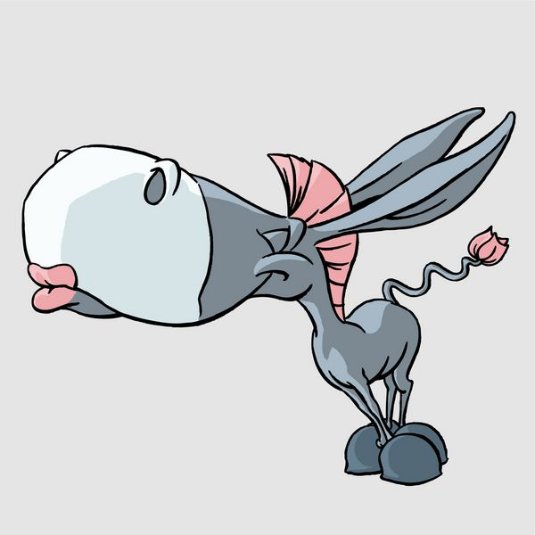
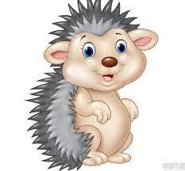
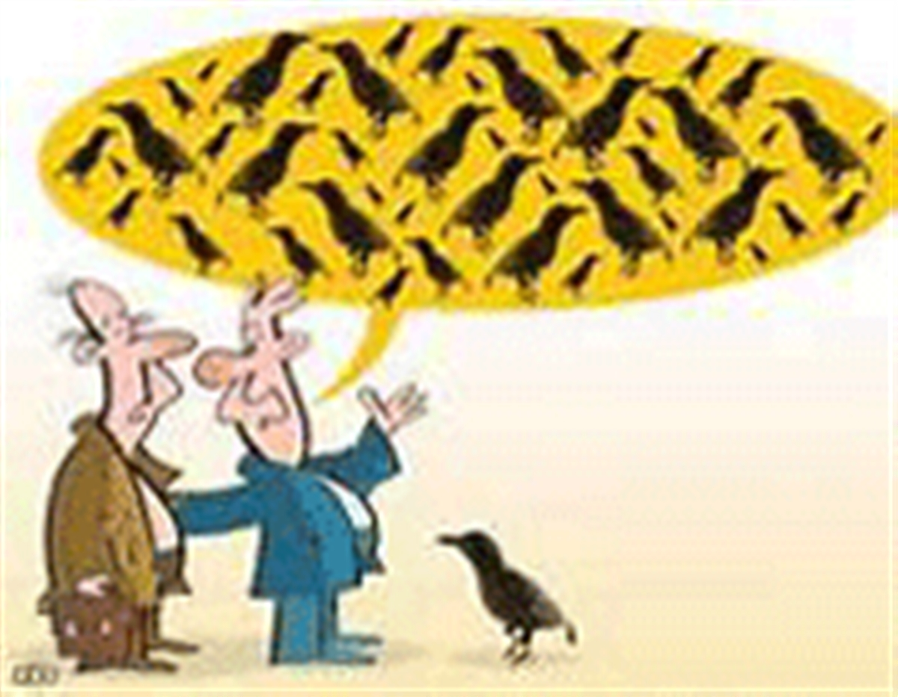

<!DOCTYPE html>
<html dir="rtl" lang="fa-Af"></html>
<head>
    <meta charset="UTF-8">
    <meta http-equiv="X-UA-Compatible" content="IE=edge">
    <meta name="viewport" content="width=device-width, initial-scale=1.0">
    <title>Afghan proverbs</title>
    <link rel="stylesheet" href="styles.css">
</head>
<body>
    <header>
        
        <div class="top">
            <div class="text">
        <p>بهترین ضرب االمثل های افغانی را اینجا بیبینید❕❤️</p>
        </div>
        <h1>به صفحه ضرب‌المثل‌های افغانی خوش آمدید!</h1>
        <div class="logo">
            </div>
    </div>
        <nav>
            <ul>
                <li><a href="index.html">خانه</a></li>
                <li><a href="gallary.html">گالری</a></li>
                <li><a href=" proverb-details.html"> جزییات ضرب المثل ها</a></li>
                <li><a href="interaction.html">دیوار تعاملی</a></li>
            </ul>
        </nav>
    </header>
    <div class="search-bar">
        <button>جستجو</button>
        <input type="text" placeholder="جستجو...">
    </div>
    <div class="head">
    <h1>ضرب‌المثل‌ها</h1>
    <P>ضرب المثل‌ها کاربرد‌های زیادی در زبان دارند و در همه‌ی زبان‌ها ضرب المثل‌هایی مطابق با فرهنگ و سنتشان وجود دارد. در این مطلب چندین ضرب المثل‌ افغانی جالب همراه با معنی گردآوری شده است.</P>
<P>ضرب‌المثل یک جمله یا یک عبارت کوتاه و گاهی یک مصرع شعری است که در آن یک مفهوم بزرگ اجتماعی نهفته است. هویت گویندگان ضرب‌المثل مشخص نیست و هر کس در یک موقعیت، نکته‌ای حکیمانه را بر زبان آورده که بعد‌ها به صورت ضرب‌المثل یا مثل مورد استفاده قرار گرفته است. ضرب المثل‌ افغانی، سرمایه‌ای عظیم برای بررسی است که به کمک آن می‌توان به علل بسیاری از رفتار‌های اجتماعی مردم افغانستان پی‌برد. در این بخش تعدادی از ضرب المثل‌های کاربردی و معروف افغانی آورده شده است.</P></div>
    <div class="proverbs-details">
        
        <h2>خرس را که یاد کردی سوته در دستت بگیر</h2>
        <p class="translating">Hold the whistle in your hand as you mentioned the bear.</p>
        <p clas="explain">معنی: استعمال این ضرب‌المثل در مواقعی است که درباره شخصی در غیبتش سخنانی گفته شود و وی ناگهان وارد شود.</p>
        <a href="gallary.html" class="back-btn">بازگشت به گالری ⬅️</a>
    </div>

    <div class="proverbs-details">
        
        <h2> کار کو داندازه که از دست و پای نندازه</h2>
        <p class="translating">Work hard so that you don't miss a beat</p>
        <p clas="explain">معنی: کار را با قاعده انجام بده تا از دست و پا نیفتی</p>
        <a href="gallary.html" class="back-btn">بازگشت به گالری ⬅️</a>
    </div>

    <div class="proverbs-details">
        
        <h2>کم بخور نوکر بگیر</h2>
        <p class="translating">Work hard so that you don't miss a beat</p>
        <p clas="explain">معنی: توصیه به بزرگ منشی می‌کند. حتی اگر قدرت و توانایی کافی نداری از خرج خودت کم کن و نوکری برایت استخدام کن تا شخصیت است پیش دیگران بالا برود.</p>
        <a href="gallary.html" class="back-btn">بازگشت به گالری ⬅️</a>
    </div>

    <div class="proverbs-details">
        
        <h2> آش مردا دیر پخته میشه</h2>
        <p class="translating">The men's soup is cooked slowly.</p>
        <p clas="explain">معنی: در کار مرد عجله‌ای در کار نیست</p>
        <a href="gallary.html" class="back-btn">بازگشت به گالری ⬅️</a>
    </div>

    <div class="proverbs-details">
        
        <h2>خر خو همان خر است، لاکن پالانش نو شده</h2>
        <p class="translating">The donkey is the same donkey, but its saddle has been changed.</p>
        <p clas="explain">معنی: هر چه قدر هم که به ظاهر و لباس خود برسید باز هم اصالت تغییری نمی‌کند.</p>
        <a href="gallary.html" class="back-btn">بازگشت به گالری ⬅️</a>
    </div>

    <div class="proverbs-details">
        
        <h2> تنگ آمد د جنگ امد</h2>
        <p class="translating">She came to the war</p>
        <p clas="explain">
            معنی: چون عرصه بر او تنگ شد ناگریز کمر به جنگ بست. یا به عبارتی کارد به استخوان رسید.</p>
        <a href="gallary.html" class="back-btn">بازگشت به گالری ⬅️</a>
    </div>

    <div class="proverbs-details">
        
        <h2>دیر آیه درست آیه</h2>
        <p class="translating">Late verse, correct verse</p>
        <p clas="explain">معنی: دیر آید درست آید.</p>
        <a href="gallary.html" class="back-btn">بازگشت به گالری ⬅️</a>
    </div>

    <div class="proverbs-details">
        
        <h2>هرچی کنی، دمب خر یک بلست اس</h2>
        <p class="translating">Whatever you do, the donkey's tail is a blast.</p>
        <p clas="explain">منظور: وقتی استعمال می‌شود که تلاش و پند و اندرز اثر نگذارد و شخص مورد نظر بر گفته و کردار خود پافشاری نماید.
            معادل فارسی: یاسین به گوش خر خواندن</p>
        <a href="gallary.html" class="back-btn">بازگشت به گالری ⬅️</a>
    </div>

    <div class="proverbs-details">
        
        <h2>از یک دست صدا نمیبرایه</h2>
        <p class="translating">It doesn't make a sound from one hand.</p>
        <p clas="explain">معنی: یک دست صدا ندارد.</p>
        <a href="gallary.html" class="back-btn">بازگشت به گالری ⬅️</a>
    </div>

    <div class="proverbs-details">
        
        <h2>خارپشتک چوچۀ خود را میگوید: بخملی بچه‌ام</h2>
        <p class="translating">The hedgehog says to its chick: "My baby, velvet</p>
        <p clas="explain">معنی: سوسکه بچه‌اش از دیوار بالا می‌رفت، می‌گفت: قربون دست و پای بلوریت.</p>
        <a href="gallary.html" class="back-btn">بازگشت به گالری ⬅️</a>
    </div>

    <div class="proverbs-details">
        
        <h2> گشنه ره یک لقمه، مانده ره یک قدم</h2>
        <p class="translating">Hungry for a bite, hungry for a step</p>
        <p clas="explain">معنی: گرسنه را یک لقمه، مانده را یک قدم
            منظور: در حالت درماندگی کسی گفته شود، که حتی با کوچکترین کاری چاره کارش ساخته بشود.</p>
        <a href="gallary.html" class="back-btn">بازگشت به گالری ⬅️</a>
    </div>

    <div class="proverbs-details">
        
        <h2> لاف در غربت، آواز در بازار مسگران</h2>
        <p class="translating">Bragging in exile, singing in the coppersmiths' marke</p>
        <p clas="explain">معنی: آدم در غربت هر چه لاف می‌زند، دیگران باور می‌کنند، چون کسی وی را نمی‌شناسد.</p>
        <a href="gallary.html" class="back-btn">بازگشت به گالری ⬅️</a>
    </div>

    <footer>
        <hr class="line">
        <footer class="footer">
           <P class="footer-quote">گرد آوری زیباترین و  پر مفهوم ترین ضرب‌المثل‌های افغانی"</P>
           <p class="footer-copy"> &copy; سونا قریشی  2025</p>
        </footer>
</body>
</html>